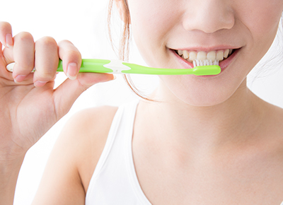

- ホーム
- 包括的なお口の治療
自分の大切な歯について、真剣に考えたことはありますか？
四ツ橋駅から徒歩2分の吉川歯科医院では、みなさんの歯が健康のままでいられるようにお口全体に生じているトラブル・疾患の包括的な治療をおこなっております。
まずは大切な歯を守ることが第一ですが、生活していく中で「虫歯」はどうしても起こってしまう病気です。その虫歯治療を行うため、一般治療から根管治療までなるべく歯を削らない治療を心掛けていますが、場合によっては歯を抜かないといけない場面があります。そのときにご提案させていただくのがインプラント治療です。このページでは吉川歯科医院が考える包括的治療についてご紹介します。
自分の大切な歯を守るため、予防する考え方が大切です。

従来の歯科治療は、治療する歯だけを治療するのが一般的でした。しかし、「痛いところだけ」「気になるところだけ」治療をしても、痛みが再発したり新たな疾患が発生したりを繰り返すことは少なくありません。また、複数の歯科疾患を抱えてしまった場合に、治せる疾患と治せない疾患があるのは患者さんにとっては困ることです
これからの長い人生、人工的な歯ではなく、自分の歯で食事・生活などをしていきたくありませんか。インプラント治療や入れ歯などで歯を補うことは可能ですが、自身の天然の歯に勝るものはありません。まずは、自分の歯をしっかりと守るため、虫歯を予防するところから始めましょう。
虫歯になってもなるべく歯を残すよう、根管治療も行っています
虫歯といっても症状によって治療方法が変わってきます。
軽い虫歯であれば一般歯科（虫歯治療）で、歯を少しだけ削って詰め物を行うことができますが、重度の虫歯である場合は抜歯と診断されることも少なくありません。
当院では患者様になるべく天然の歯で過ごしていただきたいという考えから、歯の根っこだけを残すことができる根管治療を選択します。
細かい治療になるためマイクロスコープといった精密に治療ができる機材を使いながら、丁寧に治療を進めていき、虫歯の原因となる病原菌を治療いたします。
虫歯が悪化しすぎて抜歯… そんなときはインプラント治療を行います
重度の虫歯が進行した場合、どうしても歯を抜かないといけません。
そうなると歯が無くなってしまうので、仮歯を入れなければなりませんが、当院ではインプラント治療をおすすめしています。
歯を失ってしまった部位へ人工歯根を埋入するインプラント治療だけでなく、インプラント治療においても歯を失ってしまった原因を考え、予防処置を施します。
たとえば、歯を失った原因が歯周病である場合には、インプラント治療を始める前に歯周病の治療もおこないます。あるいは咬み合わせが原因である場合には、咬み合わせ全体の調整をおこない、インプラントに負担がかからないようにします。このようにインプラント治療一つでも、お口全体の問題点を考えながら治療を進めることで長期間、インプラントが機能します。